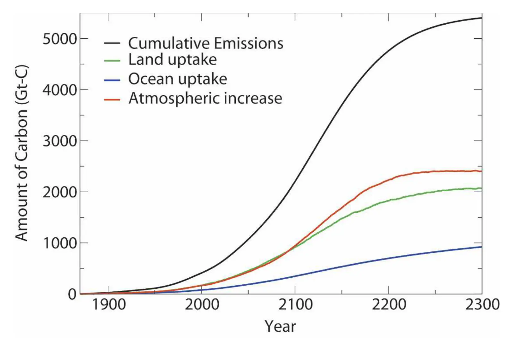

Multicentury changes to the global climate and carbon cycle: results from a coupled climate and carbon cycle model
Key finding. Releasing the CO2 from all currently estimated fossil fuel resources warms global climate by about 8 K by the year 2300 and raises atmospheric CO2 to 1,423 ppmv, with emissions peaking above 30 petagrams of carbon per year early in the twenty-second century and nearly 50% of cumulative emissions still remaining in the atmosphere at 2300.

What question did this research address?
Emission scenarios normally run to 2100 and stop well short of the resource. That leaves open a simpler question: what if all the fossil carbon currently estimated to be recoverable were actually burned?
Answering it requires a model in which climate and the carbon cycle affect each other, since over centuries the land and ocean sinks respond to the warming they are helping to cause. This paper ran that case out to 2300.
What did we find?
The warming is larger than a fixed sensitivity would predict, because the model's sensitivity to radiative forcing increases as the simulation progresses.
Nearly half of everything emitted is still airborne in 2300, so the sinks do not catch up within the period even though they keep working.
Both soils and living biomass remain net carbon sinks throughout — the land biosphere does not flip to a source in this model.
That makes the result conservative in two respects at once. The model has relatively low climate sensitivity and strong land carbon uptake, and it still produces about 8 K.
Why does it matter?
It gives the fossil resource an upper bound expressed as a temperature. Reserves are normally quoted in tonnes or barrels; this converts the whole recoverable estimate into the climate it would produce.
The rising sensitivity is the uncomfortable detail. It means the damage per tonne is not constant along the path — the later tonnes do more than the early ones, which is the opposite of the intuition behind a fixed carbon price.
Because the model is favourable on both sensitivity and land uptake, the 8 K is better read as a floor for that scenario than as a central estimate.
Citation, data, and code
Govindasamy Bala, Ken Caldeira, Arthur Mirin, Michael Wickett, and Christine Delire (2005). Multicentury changes to the global climate and carbon cycle: results from a coupled climate and carbon cycle model. Journal of Climate 18, 4531-4544.
Related
- How long does a carbon dioxide emission go on warming the planet?
- Climate sensitivity uncertainty and the need for energy without CO2 emission (Caldeira et al., 2003)
- Stabilizing climate requires near-zero emissions (Matthews and Caldeira, 2008)
- Combustion of available fossil fuel resources sufficient to eliminate the Antarctic Ice Sheet (Winkelmann et al., 2015)